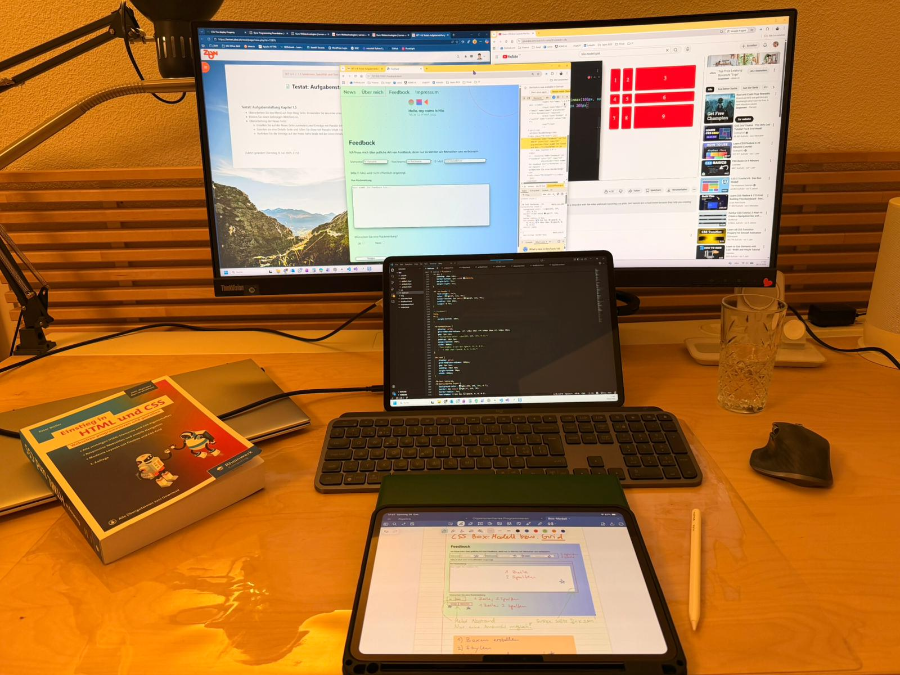

Die letzten Wochen waren intensiv! Von der ersten HTML-Struktur über CSS-Styling bis hin zu komplexen Grid-Layouts – mein persönlicher Blog nimmt endlich Form an. Besonders spannend fand ich die Arbeit mit Responsive Design und die Gestaltung der Lebenslauf-Boxen. Natürlich gab es auch Herausforderungen: Radio-Buttons, die nicht zusammenarbeiten wollten, mysteriöse schwarze Borders beim Fokus und Grid-Spalten, die einfach nicht gleich breit werden wollten.

Aber genau das macht den Lernprozess aus! Jedes gelöste Problem bringt mich einen Schritt weiter und gibt mir mehr Sicherheit im Umgang mit HTML und CSS. Der Farbverlauf im Hintergrund gefällt mir schon richtig gut – er gibt der Seite eine persönliche Note. Auch die Polaroid-Bilder auf der "Über mich"-Seite sind genau so geworden, wie ich es mir vorgestellt hatte.